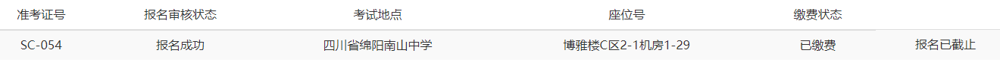
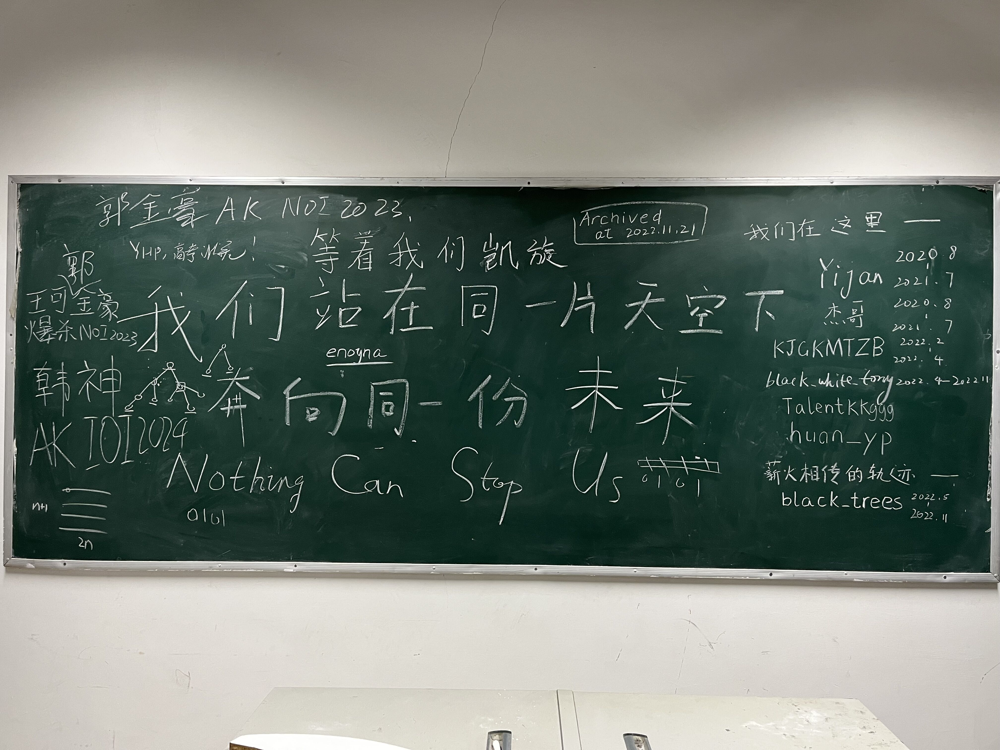
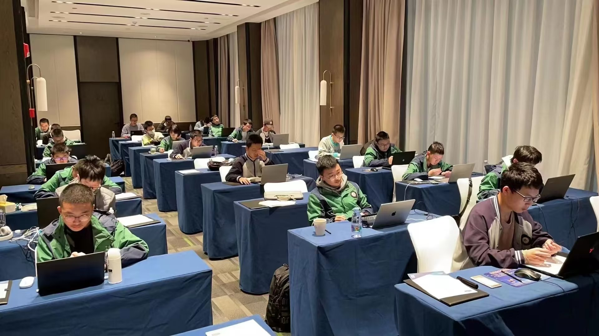

NOIP2022
如果你是在 LuoguBlog 或者 cnblogs 看得到的。
建议到 GithubBlog 上看，因为我用了只有 mkdocs 支持的扩展语法。
NOIP2022 游记ψ(｀∇´)ψ
11.17ψ(｀∇´)ψ
上午写了一个能量守恒+倾斜传送带模型的好吃题。
没来得及写 notes 就收到了小停课的消息。
然后下午就回去整了点花活，写了点 Vim-usage。
然后把期望 dp 那个题写了，配置了一下环境，发现学校电脑是 Vim 8.0 /ch
所以卸载了在 D 盘里重装了一个 9.0，但是好像 mkdp 出了点问题，于是发了一个 issue.
呃呃，然后晚上吃饭之前就是看教职工篮球联赛。
我的化学老师，物理老师，还有 OI 教练发挥稳定，带领高一教师组以 34：19 的好成绩击败了高二教师组！
然后在另外一边看到了初中的班主任老师王老，过去看的时候正好看到王老单手进了一个很漂亮的三分还是两分。
拜谢，后面一堆原 19 班的人围着王老聊天。。
心态啥的总结就不挂上来了，要看的时候翻下日记本。
C 老师找我们三个谈了下今后的目标之类的。
NOIP 放松考吧。
开核了酒精队长，感谢 Ed 提供的关键信息。
11.18ψ(｀∇´)ψ
Restart 能解决 90% 的问题（确信。
呃呃，今天是摆的，上午开了个 ABC277 VP，中间下去拍了个照花了 30min，回来写了板子 E，D 有个 [i] 打成 [n] 于是在时间结束后 1min 过了。
然后就是摆烂，摆烂。
F 2400，基本没啥思路，打算去做下 Poker 也没干劲。
于是下午继续摆烂，和 kmz 出去吃了个饭，现在终于开始查条子了？
晚上说了下去绵阳考试的事情，这次是在南山。
有没有人能面基啊/kel

上次在东辰考试，我算是撞到那啥了。
这次换到南山考试，希望能有更好的 rp？
C 老师找我们高一的所有人来集体谈了一次话，用他的话说是一个值得纪念的时刻。
相信暴力！！！！相信 CCF 的数据一定很！！！！！
因为之后大概率没法集齐了。
晚上找 wkm 学了一下 gdb 咋用，明天要用一用。
听说 wkm 上午被防盗单向门锁在天台了草，最后还是喊了一个楼下打扫中华园的蓝背心帮忙的（。
呃呃，可能明天要写一写 Task 和 Limit 之类的，感觉这样太摆了不好。
11.19ψ(｀∇´)ψ
进行了一个模拟赛的考，100 + 0 + 100 + 33。
T2 因为不会群论所以没读懂题，一分没拿。
T4 思路正确然而少讨论了些内容。
和 ccr 讨论了一下认为 T4 应该就是分讨，T2 比较玄幻。
下午写完 Vim-Usage 之后被 opj 叫去给学弟讲述血泪经历。
差不多说了这些内容吧（有点乱）：
draft.txt
题解的利弊。
- 不敢质疑，思考量太少，久了之后思维活性就下降了，水平也会下降。 也会有以为自己能想出来的这种心理，然后不深入，G。
- 对思路是一种新的启发（尽量找和自己做法类似的题解，这样效果更好。）
- 能学到东西就是好的。
不管你学的这个考试会不会考，最重要的是学没学到套路，后期都是比谁 Trick 见得多。 思考的那个过程才是最重要的。
如果开始对着题发呆的时候，去厕所或者再读一遍题面。 把自己思维的流程图画出来，免得因为发呆浪费时间，中断思考过程
深度思考的定义大概是指，脑袋里面有一个清晰的流程图，知道每一步要维护什么信息，知道下一步要干什么，知道为什么要这么干，知道一些细节，但是确实因为一些 key 没想到不会，这个时候看题解才是有价值的。
OI 这东西真正吸引人的地方在于思考过后那个拥有巨大成就感的过程（想出来，看题解恍然大悟之类的）。
所以真的投入之后会发现，其实颓废，也就是短时间能获得成就感的东西，真的没有意思。
JX 找我问了点 Vim 相关的东西，感觉其实 OI 必要的配置和key也就那些？
发现没有人可以和自己一起住，xzq 和 hfy 的家长都要一起去，所以我寄寄了。
晚上回来弄了一下博客的框架，更新了 mkdocs。
被 cftm 整破防了，具体原因不提。
久违的吃了只烤鸡，香的。
发现电子班牌上的个人介绍可以在网上改，于是改成了这样：

哦对了，记得整理下博客的图片，换个图床。
呃呃，感觉就这些了。
11.20ψ(｀∇´)ψ
老爸去跑成马了。
更新到了 win11 22H2，感觉更舒服了。
上午找了找万华镜的资源，突然想到一个事情。
感觉很多事物和我的关系好比 \(\sin x\) 和 \(\cos x\)。
比如我很早的时候就看见过东方，但是没有入坑，当时看 cz 的入坑指南里写的弹幕射击游戏，觉得可能没什么意思。
结果后来因为某首歌被带入了坑，尝试了妖妖梦，喜欢上了 STG 的风格。
万华镜也是，我之前搜幻想万华镜的时候搜出过万华镜，当时觉得就是个什么番剧吧可能。
然后也没有深入了解过，结果当我想尝试 Gal 的时候，万华镜又出现在了我的眼前。
所以就真的，是那种不断交织缠绕复合离别的过程，构成了人生啊。
你以为我们渐行渐远了，实际上却是为了下次相交做准备，你以为我们相交了，能合成一条线了，实际上我们马上就会离别。
任何事情都不是 Eternal 的，或者说你的人生好比火车，你遇到的事情，遇到的人，会在不同的站上车，下车，或许在乘坐别的线路后又和你交织。
是这样的。
我靠万华镜好好玩！！！
莲华，莲华，莲华，嘿嘿……
黑长直冷傲娇，怎么会有这种存在！！！！！
回学校之后和 hfy 进行颓废活动，喝喝粥，然后继续万华镜。
嘿嘿，我的莲华，嘿嘿，莲华……，我的莲华。
感觉一个事情是，每次打 Gal 都会只走最喜欢的角色的路线，其他的绝对不会碰。
而且如果有 He，遇到了 Be 会立马读档。
为什么会这样呢，我也不知道，也许是个人性格。
来看点 hfy 图：
hfy 要求合影，草。
于是就合影了。
呃呃，但是感觉好像这样有点过于颓废了。
不行不行不行不行不行不行，过于浮躁了。
写完游记赶紧做做题恢复状态。
MD，ARC 给我整不会了，水平低下，可能是有点懒了，猜了性质不想去证明或者证伪。
呃呃，感觉这个状态非常不对，有必要整点什么提醒自己。
11.21ψ(｀∇´)ψ
状态很不好，有点头痛 + 胃痛。
整天什么都没做，fw。
写了点鲜花，居然得到了认可，之后拿到 laptop 就 update 到 github blog 上。
这里是原文：
11-21 日鲜花 - Edit
Edit
Stomachache，headache，打完球过后换衣服太慢了，可能是有点风热感冒。
吃了连花清瘟胶囊之后还是一样，过于难受，一道题也没有做。
临时起意决定请个假出去出个饭，也算散散心。
裹上五层衣服，戴上印刷着企鹅的口罩，这好像是从 tencent 那里拿回来的吧。
走到 PhOer 基友推荐的老麻抄手店，想点一份老麻，但是转念一想，感冒了还是不要吃辣的比较好。
“三两，清汤”，我如是走进店。
给人一种很怀念的感觉啊，小时候经常会吃华阳那边的一家老麻抄手，从来都是吃清汤。
但是还是以孩提的身份满意的接受了一碗碗一两的抄手。
很烫，很合我意，出来就是为了吃上一碗这样热乎乎的抄手的，也许会让我缓解一点吧。
怎么感觉群友比三次元的妹子还体贴，可能是因为以前那次经历让我对三次元的妹子失去了好感吧。
不管干什么，我都是那种在一棵树上吊死的人。
Galgame 也是，只推自己喜欢角色的 HE，知道没有 HE 就绝对不会入手。
感情也是这样的，但也因为这个被伤的很深，不给幸好它没有影响到我，或者说只存在正面影响。
想到这里，一口汤喝下去，好烫！
热气蒸腾着，镜片上起了一层水珠。
舒服多了。
走出去，去到章鱼烧的摊子，摊主是一个慈祥的老爷爷，给我一种很亲切的感觉。
慢吞吞，不紧不慢的把章鱼烧挑起来，真好啊。
“不要肉松哈（四川话常见语气助词）”，
“好，要哈子（什么）酱？”，“我想一哈（一下），撒拉酱嘛（四川人特有 s sh 不分）”，
“莫得（没有）问题！”。
父亲说过，双手递出，双手接过是对别人的尊重，我，摊主都这么做了，摊主一定有一个友善的内心吧（笑。
吃的时候还是像个 baka 一样，尽管我知道会有点烫嘴，但是还是一口咬了下去，急着往外吹气。
很不小心，木鱼屑附着在沙拉酱上，粘到了我的嘴边，舔掉。
如果有个妹子在旁边的话，也许会被我的这副样子逗笑吧，冷娇的黑长直妹子绽放笑靥的刹那，一定很美。
可惜我已经失去了这样的机会很久了。
随机游走，仿佛是在一条惬意的街道上，但好像也确实是一条惬意的街道。
寒风吹过来了，我戴上帽子，没有热饮，很难受，想喝点热的，但是超市里都没有。
卖臭豆腐的大叔，孤零零的等着 customer，但是从他的脸上看不到一丝失望。
可能很多作家都没有向下，看过身边的这些小人物吧。
描写他们的，一定是个苦涩但是带着一丝对生活的期望的故事，我这么想着，走向了民乐。
民乐，许久没有涨价，终于涨了一次价，看到了曾经不知道在那一部动画里看过的 SANGARIA coffee。= 9.9，为什么不是 10￥ 呢，这也许是商家的意图吧。
用手搓着咖啡，想让它变暖和一点，好希望有一个可爱的妹子，围着围巾，戴着手套，尝试着吹凉手里的奶茶，或者说吹着我买的奶茶，虽然我并不喜欢喝奶茶，但是妹子们也许很喜欢喝吧。

每次想要记住什么东西的时候总是会很快的忘记，太贪心了。
回到教学楼，感叹着这就是生活啊，这样的日子不常有，但是格外珍贵。
人生是一组组 \(\sin x\) 和 \(\cos x\) 的图像，交织缠绕着，远离着，靠近着。
我遇到你，那是你和我都到达了 \(k\pi + \dfrac{\pi}{4}, (k \in \mathbb{Z})\)。
只不过你的图像可能会突然转向，移到另一个平面，我就不会重新遇见你。
但是有些人不一样，你和我的曲线仿佛天生就应当同处同一平面的 \([-1, 1]\) 之间，从我们的定义域相交的那一瞬间后，我们就不会分开，直到生命结束，你或者我，我们的定义域到此为止。
可是生与死，从来都是只读的 std::pair<long double, long double>，你无法改变这一切，命运在创造你的时候就已经用 Administrator 权限写入了这两个高精度浮点数。
可能你会尝试 sudo，但是人生是 Windows 系统，闭源的它无法让你窥见其最本质的真实，你不可能成为 Administrator，你只是 Guest，一个普通的 Guest。
当然我们中总是有人，会去尝试探求 Administrator 的奥秘，破解，重组，他们做的事情是值得尊重的，因为我们实在是太渺小，这是我们证明自己存在的意义，Administrator 在删除你的时候说不定会在其他 User 的 memory.txt 当中留下那么一行字，代表你来过。
只要你不从最后一个拥有你的 memory.txt 中消失，你就是 immortal 的。
你可能会觉得这只是一个人脑袋不清晰的时候说的胡话，但是无所谓了。
我想去更多的，更多的了解这个世界的奥秘，我很平凡，但是我想去试试，说不定我就会在某个权限组里获得一席之地，maintain 着，modify 着注册表。
我手中的 regedit 会是什么，我不知道。
教练要了科技馆用来给我们放电影，但是我身体不太好就没有去。
可能就这样了，睡一觉就好了。
被偶像杨爷认为是 win 了。
11.22ψ(｀∇´)ψ
到绵阳了。
还是写了篇鲜花：
11-22 日鲜花 Phenomena
Phenomena
昨天晚上听 C 老师说，电竞机房要封存了。
真的走到我之前觉得最坏的结局了呢，可能我就这么失去了一个容身之所？
暴力 Ag 大跌 starCatMeow 也在，借了手机拍下了这张照片。
没想到我还真的是 last one。

最后的时间是在看世界杯，当时好像看到 3 - 0 就走了？
China 上次进 World Cup 已经是 20 年前的事情了啊，好像也是第一次。
沉默的 14 s，日本足球会有更多的少年补上，我们呢？我很想知道，我们呢？
你对的起我们吗？脸都不要了。
回寝室进行了热水澡的洗，感觉舒畅多了，盖上巨大厚的被子，睡着了。
有没有梦？好像有吧，我记得是我很难受的时候，梦见有一个可爱的女孩子给我膝枕。
嘴里唱着小时候听见的的民谣，又很快陷入黑暗了。
今天我们班是蓝背心，出寝室的时候拿走了 Phone，于是拍下了这张照片：
做成外文明人。
可能有非 ✖ Y 的人看到这个，那么还是解释一下吧。
蓝背心好比志愿者，呃，好像不太恰当。
简单来说就是在校园里随机游走，清扫校园，监督文明礼貌，制止不文明现象，帮助老师和同学。
一般一学期才能轮到一次，这半天就都不会上课。
我之前好像一直是劳动组，在初中部那边，累的要死。
那两次每次都偷偷 run 去机房，都被抓包了/ll
我竟然还记得当时写的题，好像是那个区间 dp，Polygon。
经常会有这样的感觉，近期的很多事情我会忘记，但是有一些细小的东西可能会记得很清晰。
走到楼道里面，突发奇想想拍一张照片。
有时候第一次遇见一些东西的时候，会莫名其妙有经历过的感觉，可能是在梦里预见，也有可能是我猜的错觉。
这种现象已经不常见了，我许久都没有遇见过了，但楼道给了我这种感觉。
自己其实发现过很多很奇怪的现象，但是都没有记录过，这些现象总是给我以奇妙的感觉。
难得有一次机会，就记录一下吧。
来到机房，发现了原批。
上午的模拟赛 T1 没删 Debug，T4 corner case 被我注释了，哈哈，我是不是蠢狗。
难得有机会，中午的时候就去拍几张学校的照片吧。
一如既往的操场，一如既往的中华园。
一如既往的面包和乌龙茶。
好像不止拍了学校，还拍了点别的（CWOI 多人照）。
在车上重新戴着耳机推了一遍莲华线，深感莲华的声优的强大之处，10年了还能保持那样。
好可爱，说起来昨天外语节开幕的时候的多语言住持里有日语主持人。
那个声线简直恐怖，就是标准的可爱萝莉声线，如果我没记错的话一年前我也听过一次，很厉害。
以前学的伪音也已经完全不会了，如果是以前的我应该可以模仿莲华的声线吧。
哈哈，现在这破锣嗓子，玩个锤子。
呃呃，又突然想起，我有个习惯，我特别喜欢收集对我有象征意义的东西。
比如 fumo，ex-npy 的书信，The Legend of Zelda 的卡带，Lunatic Kingdom 的 CD。
或者说我一直在寻求一种寄托，我希望这种寄托能够实体化，很蠢吧。
昨天的鲜花名为 Edit，今天的鲜花名为 Phenomena，我似乎在尝试写点深刻的东西。
昨天有很多人评论，我很开心。
在标识符里分割每一个字符的行为不知道可以有多少人注意到。
昨天说了人生，今天说点什么呢。
要不还是说说人生吧，哈哈。
但是讲句实话，刻意的遣词造句远远比不上突然出现的灵感。
\(\sin x\) 与 \(\cos x\) 便是如此。
但其实，我所 Explain 的这些 Phenomena，就已经能算是突然出现的灵感了。
不知道会不会有人也观察过，记录过这些现象？
我草草草草草草。
刚到绵阳就摔坏了自己的手机。
急急急。一定是酒店大厅的 bot 的错。
中午拍的照片全部没了/ll
酒店环境感觉还可以，用电脑前置摄像头拍了照片。
呃呃，感觉不想写了，愤怒，我的手机，我的手机！！！！！！！！！
发现成都的长期码不能在绵阳用，寄寄。
很可惜和 dottle 错开了，没有能见到。
感叹酒店位置很好，吃了旁边的 dicos，晚上开摆。

训练环境大概这样。
11.23ψ(｀∇´)ψ
上午进行模拟赛的改错。
但是好像还是不会严谨证明 T2 结论，T3 想到了一个把 end 拉上来的合并方式但是具体没想清楚。
然后就学李超线段树去了。
我r，60￥，就这？酒店你怎么这么黑，我和 xzq 54￥ 吃饱了还多，你这 60￥什么水平，好意思？？？？
谔谔，下午讲题，然后就疯狂调试李超树，晚上发现是bool转换的锅，我*，退钱。
完蛋，好题推荐完全没做，感觉其他人都卷了很多了，我丢。
不过这次李超树的笔记写的比较简明？感觉是我想要的风格。
看了下日本，很沉稳啊，2-1 逆转德意志战车，恭喜。
11.24ψ(｀∇´)ψ
模拟赛寄寄，T1 容斥不会，T2不会，T3不会，T4不会，只因了。
czh 最近暴力打满感觉很值得学习，要相信大部分人实际发挥会很烂。
也就是说考场认为不太好的分数，如果拿到了还是有机会的。
第一次吃疯狂星期四，感觉一般。
选了一场 ARC，ARC076，明天晚上和盒饭油一起打。
然后整了四个期望+容斥题，打开一下思维。
明天下午打 ARC，晚上过一下板子。
深感水平真的不够。
晚自习听号家军分享考试经验之前进行公屏整活，草。

我居然入镜了，这瓶 Kvass 显然是我的。
看了下葡萄牙打加纳，很激情！
和群友开语音，第一次见到 dwt 真人。
11.25ψ(｀∇´)ψ
酒店的叫醒服务简直是，令人😅，我昨天说的 6:55，结果7:40了叫我？
今天是比较摆的，感觉其实都没做什么事情？
谔谔，不过 gjh 神指导了容斥相关的一些东西，发现钦定和强制的意义略有不同。
然后下午延续传统和 hfy 打 ARC 开脑洞，做了 CDE（其实算是口胡）。
进行了一个音游人的聚会，还有传统合打。
这张图是最近看到有人在那个 Remix 过后整的谱子，质量很高。
小黑子技术力高超！
晚上继续开摆，结果杨爷给的题单没看（（（
谔谔，感觉还是有必要过一遍板子，然后突然想起自己 vimrc 没有背，我草。
和杨爷最后交流了一下考试技巧，收拾了东西，就打算睡了，明天进考场之前再过一遍数学和其它的重要的东西。
11.26ψ(｀∇´)ψ
谔谔，感觉南山的机房也远远大于我们。
和 hfy 挨着，不过是前后挨着，一个人一个桌子感觉很舒服。
zip 密码是 biu#2019miss，出题人是车万人吧，pdf 居然也有密码，长知识了，solo@2022
但是 vimrc 忘记背 backspace 的settings，妈的，只能用 C::B 了。
开 T1，我草，感觉很难搞啊，T2，T3，T4，我草都很难搞。
冷静一下，先看看 T1，感觉是小清新模拟，但是我不会 100pts，写了 64pts 跑路。
然后开 T3，因为感觉 T2 有点那啥，发现 T3 这不先求个割边然后计数一下。
但是仔细一看，感觉其实特别麻烦，我日。
然后又去看 T4，感觉暴力很难写。
然后陷入了一段时间的罚坐期。
冷静了一下跑去做 T2 了，手推了一下感觉暴力可以先单调栈处理一下然后算贡献。
然后开写，写的很慢，然后发现过不了样例，发现贡献算多了，然后此时只剩 1h30min。
警告了一下自己，要享受比赛，于是继续思考，结果啥都没想出来。
唉，感觉这次暴力分真的难打，T2 那个 \(n = 2\) 的虽然平凡但是不好写啊。
出考场，问大家，发现人均不会 T2，草。
听说 T3 是点双树上建虚树。
唉，感觉最大的问题就是我没怎么见过套路，很多东西没学，而且模拟赛打的太少了。
qz 他们在合影啊，我们没合影。
回去问了问群友，tyq 说 T3 不用虚树。
呃呃，感觉还是缺乏练习，咋搞捏，其实学了的东西练一练就好，但是咋保持感觉。
特别是之后干啥，我个人觉得就练习容斥，数数，期望之类的，代码量会少，也好玩。
出题人可能是车万人+homo，t1最后一个大样例答案是 114 514。
就这样，我回去学物化生了，可能每天就 plant 一点花， meow ，也许我的知识在建造 barrack 的时候能起到作用吧，希望这次 match 大家都有好成绩
最后这句话懂得都懂。
感觉近期最大的问题是进入不了状态，寄寄。
晚上测了一下，T1 该拿的还是拿了，起码有分不至于爆零。